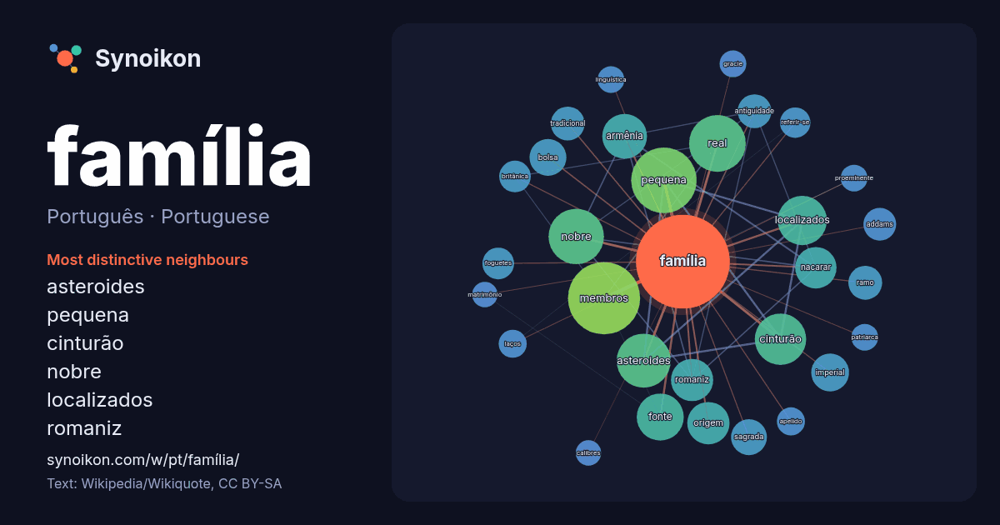

Português · Portuguese · popular word
família
“family” · The words found around it in 1469 instances from Portuguese Wikipedia, Wikiquote.

Most distinctive neighbours
- asteroides 40×
- pequena 36×
- cinturão 34×
- nobre 32×
- localizados 31×
- romaniz 26×
- armênia 26×
- nacarar 25×
- membros 20×
- real 19×
- sagrada 18×
- bolsa 17×
- addams 16×
- fonte 15×
- antiguidade 15×
- imperial 15×
- foguetes 14×
- referir-se 13×
- origem 11×
- tradicional 11×
× = how many times more often than in general Portuguese Wikipedia text.
Most frequent neighbours
- membros 73
- pequena 60
- real 45
- nobre 43
- asteroides 41
- cinturão 37
- localizados 34
- fonte 31
- pai 29
- armênia 28
- origem 25
- romaniz 25
- nacarar 24
- brasileira 22
- imperial 20
- bolsa 19
- programa 19
- série 19
- conhecida 18
- sagrada 18
In context
- Nota: Para outros significados, veja Família (desambiguação). A família (do latim: familia) é um agrupamento humano formado por duas ou mais pessoas Wikipedia snippets · Família
- Bolsa Família é apresentado a gestores públicos, Agência Brasil, 26 de março de 2007» Mais «de 85 mil famílias perdem benefício do Bolsa Família, da Agência Wikipedia snippets · Bolsa Família
- A família Kennedy ou clã Kennedy é uma proeminente família cujos membros atingiram importantes cargos na política e no governo dos Estados Unidos, e que Wikipedia snippets · Família Kennedy
- Expiatório da Sagrada Família (em catalão: Temple Expiatori de la Sagrada Família), também conhecido simplesmente como Sagrada Família, é um grande templo Wikipedia snippets · Templo Expiatório da Sagrada Família
- telenovela brasileira. Para outros significados, veja Laços de Família (desambiguação). Laços de Família é uma telenovela brasileira produzida e exibida pela TV Wikipedia snippets · Laços de Família
- A Família Imperial Brasileira governou o Império do Brasil entre 1822 e 1889, desde a Independência do Brasil pelo então Príncipe Real, Pedro de Alcântara Wikipedia snippets · Família imperial brasileira
- Uma família linguística é um grupo de línguas relacionadas por descendência de um ancestral comum, chamado protolíngua dessa família. O termo família é Wikipedia snippets · Família linguística
- as mais poderosas famílias bancárias rivais da época, como a família Baring e a família Berenberg. Acredita-se que quando a família estava no seu auge Wikipedia snippets · Família Rothschild
More Portuguese words
- arte
- ciência
- clima
- comida
- coração
- cão
- deus
- dinheiro
- força
- gato
- história
- língua
- morte
- natureza
- ouro
- ponte
- saúde
- trabalho
- trem
- verdade
- vida
- água
Precomputed on 2026-10-09 with default settings (±5 words, medium corpus). The interactive map can refresh it with live data.